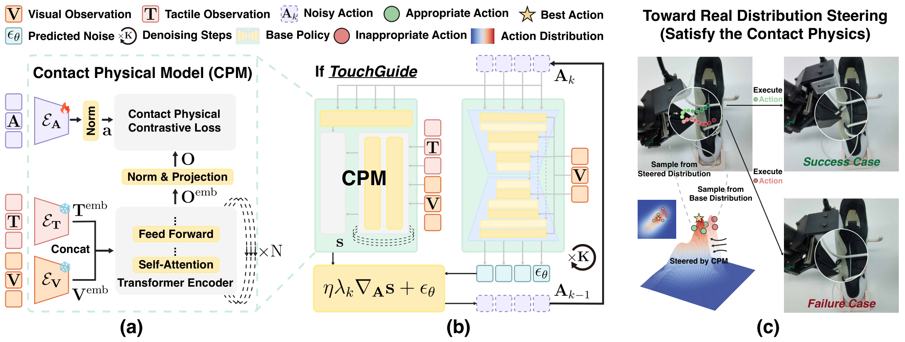

TouchGuide
策略权重不动，只在去噪或流匹配的最后几步，用触觉可行性分数的梯度把动作推向符合接触物理的一侧。
TouchGuide: Inference-Time Steering of Visuomotor Policies via Touch Guidance
五项真机任务各 20 次：π₀.₅ 平均 35.9%，触觉引导后 58.0%；Diffusion Policy 是 16.3% 到 36.2%。
01这篇要解决什么？
视触融合过去多在特征层拼接或策略层加权，前者容易被视觉主导，后者要各训一个单模态策略。这篇把融合搬到低维动作空间：基座策略照旧只看视觉采样，触觉只在采样的后几步以梯度形式介入。对做 Agent 的人来说，它是一种不碰权重的推理时干预，代价与收益都好隔离。
02先看一个场景
人手举着一把锁和一把钥匙，机器人先要把钥匙捏住，再插进锁孔转开。钥匙每次被捏住的位置都略有不同，顶视相机看不出这点偏差；只看画面的策略会按训练时的角度直接往里插，钥匙一歪就被别出夹爪。削黄瓜也一样，刀刃悬在皮上半毫米，画面上同样看不出来。
03方法怎样运转？

- 01
先固定基座策略，只在采样过程里插手
基座是两个现成实现：Diffusion Policy 走 RoboFactory 的复现，π₀.₅ 用官方实现与 pi05_base 权重加 LoRA。两者都在自采数据上训过，引导阶段权重一律不动。引导的动作全发生在采样循环内部：在预测的噪声或速度上减一项梯度，伪代码多出四行。
- 02
CPM：把观测与动作压到同一个球面上求内积
接触物理模型用冻结 DINOv2 同时编码视觉图与触觉图，经 N 层 Transformer 融合成潜观测；动作用 1D CNN 加 MLP 编码。两者 L2 归一化后取内积，即可行性分数。附录 G 给出概率解释：在潜空间高斯近似下，这个内积的梯度正比于把动作推向真实动作的方向。
- 03
训练：对比学习加噪声预训练
CPM 由作者自训，只用少量专家演示，正样本是同一时刻的观测与动作，负样本取自错开的时刻，温度可学。关键的一步是噪声预训练：推理时送进 CPM 的动作是带噪的，所以训练时也按同一个调度器加噪，加噪步数从几何分布采样，流匹配模型改用线性插值。
- 04
引导只在后期开，超参按任务重调
Diffusion Policy 用 100 步 DDPM，最后 10 到 20 步施加引导，尺度 3 到 4；π₀.₅ 走 10 步流匹配，引导窗口 0.2 到 0.3，即最后两到三步，尺度取 10。终止条件是采样步数走完，没有重试也没有外层循环。超参要按任务与策略重调。
- 05
数据来自自研的手持采集器 TacUMI
TacUMI 是 UMI 式手持夹爪，用 Vive Tracker 加两个 Lighthouse 定位，基础成本 720 美元、整机 540 克；刚性指尖让操作者直接摸到力，夹爪开度由磁编码器读出而非视觉标记，板载算力跑 XenseSDK 在线把触觉图转成 30 Hz 力场。
# 基座权重全程不动；CPM 由作者用少量演示对比学习训出
A = 采样初值() # 高斯噪声
for k in 采样步(DP 100 步 / π₀.₅ 10 步):
e = base_policy(A, V_t) # DP 出噪声，π₀.₅ 出速度，都只看视觉
if k <= K_TouchGuide: # DP 取最后 10~20 步；π₀.₅ 取 0.2~0.3
s = CPM(V_t, T_t, A) # 冻结 DINOv2 编码视触 → 与动作取内积
g = 梯度(s, A)
e = e - η * 时间系数(k) * g # DP 用 √(1−ᾱ)，流匹配用 k/(1−k)
A = 更新(A, e)
执行(A) # 终止条件只有采样步数走完
# 没有成功判定也没有重试：下一轮靠新的触觉观测重新采样方法与结果的原文定位见本页引用。
04跟着这个场景走一遍
教学推演：回到上面的场景。第一步，π₀.₅ 照旧只看图像和指令，它的动作专家从噪声出发跑 10 步流匹配，前七步完全没有触觉参与，先得到一条视觉上说得通的粗动作，大致朝锁孔伸过去。第二步，从第八步起触觉介入：CPM 用冻结的 DINOv2 分别编码当前视觉图与指尖触觉图，经 Transformer 融合成潜观测，与动作编码器给出的潜动作各自归一化后取内积，得到一个标量可行性分数。这个分数衡量的是这段动作与此刻的接触状态合不合得上，而不是它离目标还有多远。第三步，对动作求梯度，按 k/(1−k) 缩放再乘引导尺度 10，从速度场里减掉，采样继续往下走。钥匙被捏偏的那一点差别在图像上看不出来，却会改变指尖的力分布，于是梯度把插入角度往偏差的反方向推。第四步，10 步走完，动作块直接执行，没有重试也没有外层循环，下一次机会要等下一轮采样读到新的触觉观测。这套机制的边界也在这里：它只能让每一次动作生成得更合理，一旦钥匙已经被别出夹爪，CPM 只会给所有候选动作打低分，却没有任何模块会说这一次失败了、要退回去重来。作者在局限里也把任务专属训练列了出来——换一项任务，这个 CPM 要从头训。
05实验到底表现怎样？
五项真机接触任务：系鞋带 100 条演示、薯片交接 50、黄瓜削皮 50、花瓶擦拭 30、开锁 20。前三项用 Bi-ARX5 双臂，后两项用 Flexiv Rizon4 单臂配 TacUMI。每个方法 20 次，初始条件适度随机；系鞋带、交接、开锁记成功率，削皮与擦拭按人类专家完成量的比例打分。
作者报告的实验结果 · v6
| 方法 · 表 I | 薯片交接 | 黄瓜削皮 | 开锁 | 五任务平均 |
|---|---|---|---|---|
| Diffusion Policy | 5% | 0.500 | 0% | 16.3% |
| TouchGuide · DP · 触觉图 | 25% | 0.810 | 20% | 36.2% |
| π₀.₅ | 25% | 0.785 | 20% | 35.9% |
| π₀.₅ 加触觉观测拼接 | 15% | 0.760 | 10% | 30.3% |
| TouchGuide · π₀.₅ · 触觉图 | 60% | 0.975 | 30% | 58.0% |
原始证据：方法：§IV ↗ · 接触物理模型：§IV-B ↗ · 主结果：表 I ↗ · 消融：表 II ↗
两个基座的绝对水平差得远，不能把 58.0% 当成这套方法的固有成绩，换成 Diffusion Policy 只有 36.2%，系鞋带那一列所有 DP 系方法都是 0%。另一处容易误读的是把触觉当额外一路观测拼进 π₀.₅ 反而掉到 30.3%，低于不给触觉的 35.9%，说明收益来自引导这种介入方式，而不是触觉这条输入本身。
06收益来自哪里，又停在哪里？
消融与机制证据
表 II 显示噪声预训练是成败关键，去掉后三任务平均从 62.50% 掉到 39.17%。表 III 拆输入模态，只去视觉 43.33%、只去触觉 43.50%，两边几乎一样重。附录的编码器消融里，两个从零训的 ResNet18 只有 49.0%，不如冻结的 DINOv2。
结论的适用边界
模型来源分三层。编码器是现成的冻结 DINOv2，视觉与触觉共用一套；基座策略是现成实现与现成权重，Diffusion Policy 取 RoboFactory 的复现，π₀.₅ 用官方 pi05_base 加 LoRA，但两者都由作者在自采数据上训过 2 万到 4 万步，引导阶段才冻住；CPM 完全由作者自训，论文自己在局限里写明它是任务专属的，换一项任务要重新训一遍，这是最实在的前提成本。采集侧还要算上 TacUMI 这套硬件：Vive Tracker 与两个 Lighthouse、磁编码器、板载算力与 Xense 传感器，基础成本 720 美元且需要布置基站。所有结论都来自 20 次试验的真机评测，一格差一次就是 5 个百分点，系鞋带一列多数方法为 0，靠它区分方法强弱并不可靠。推理开销不大，π₀.₅ 从 18.52 fps 降到 17.24 fps；但整套机制里没有任何执行之后的判定环节。
07放回全书的脉络
这是推理时引导这一类的典型：与 Harness VLA 同样不动策略权重，但那边靠外层 Agent 换起步状态，这边直接改采样梯度，时间尺度差了几个量级。
08把阅读变成一个小研究
取一个扩散策略，在采样后段接一个打分器，扫引导尺度与引导步数，同时记录被引导前后动作的差异大小。
先自己回答：这项实验怎样才有解释力？
有解释力的证据是分数与真实结果相关：打分高的动作确实更常成功，且尺度调过头时成功率下降。只报一个最优点无法排除它在拟合超参。
- 用自己的话说出这篇改变了哪个模块。
- 画出它的输入、输出和一次失败如何被处理。
- 复述一个结果，同时说清基线、指标与实验条件。这一问不给答案，材料在第 05 节。
先自己答，再看前两问的参考答案
这篇改了哪个模块改的是采样过程，不是策略。基座策略的权重、观测接口与动作块长度都保持原样，它照旧只看视觉产生一条粗动作；被换掉的只是最后几个采样步里速度或噪声的取值，多出一项来自触觉的梯度。它没有给系统加新的决策层，没有引入规划器，也没有把触觉变成策略的一路输入——论文自己的对照恰好说明后者会把 π₀.₅ 拖低。它同样没有改动谁来宣布任务完成，评测仍按人工设定的判据与时限算。
输入、输出与一次失败如何被处理输入有三样进 CPM：当前视觉图、当前触觉观测，以及这一步还带着噪声的动作块。触觉有两种形式可选，一种是 Xense 传感器直接给的触觉图，一种是 XenseSDK 在板上算出的 35×20 三维力场，两者在算法里除维度外处理方式相同。视觉与触觉都过同一个冻结的 DINOv2，动作过 1D CNN 加 MLP，三者汇成一个标量可行性分数。输出是这个分数对动作的梯度，按时间系数缩放后减在基座预测的噪声或速度上，采样继续往下走，最终交出一整块动作去执行。终止条件只有一个：采样步数走完。这篇没有失败检测，也没有恢复通路——CPM 判的是当前动作与当前接触状态合不合得上，不是上一次动作有没有做成；分数低只会让这一步的梯度更大，不会触发重试、重新定位或换一条计划。真正的纠错窗口只有下一次采样时更新的那帧触觉观测。
策略权重不动，只在去噪或流匹配的最后几步，用触觉可行性分数的梯度把动作推向符合接触物理的一侧。
↗带着位置回到原文
首发日期用于时间排序；以下方法与结果对应 v6。数据为论文作者报告，本讲义没有独立复现实验。
QA就这一页提问或讨论
对某个数字、某条边界或某个推演有疑问，欢迎直接留言：讨论按页面分开，回复会保留在 XinrunXu/awesome-agentic-robotics-papers 的 Discussions 里，需要一个 GitHub 账号。